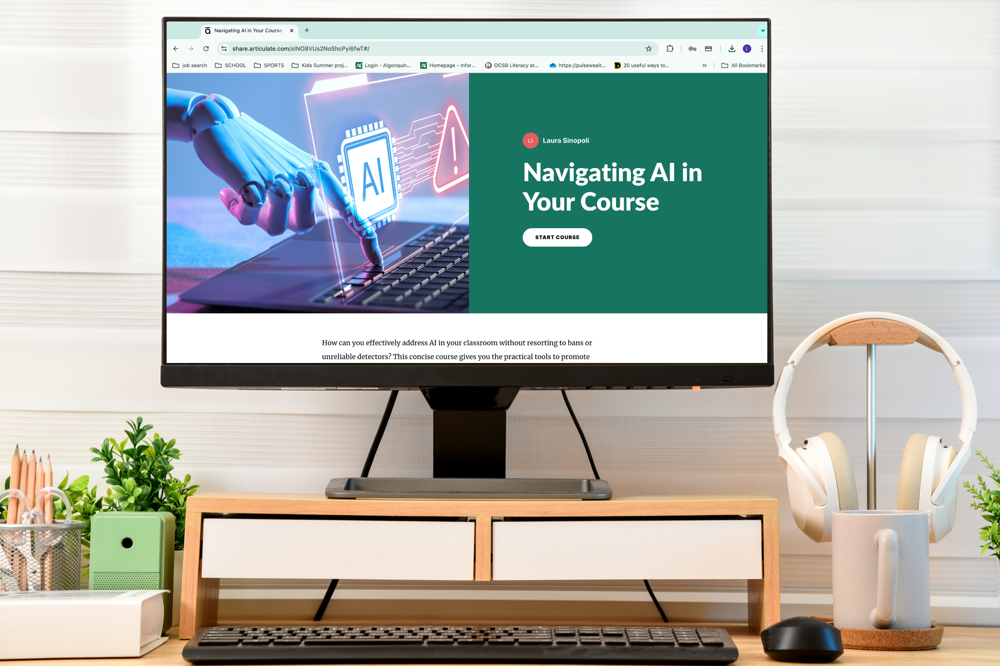

Featured Project
AI Use for Faculty: Short Course
- Challenge Faculty need clear, practical guidance on using AI in teaching and learning.
- Approach Built a short, self-paced Articulate course based on Algonquin College's Learning and Teaching Services supports for AI use.
- Result A concise, interactive introduction faculty can complete on their own time.